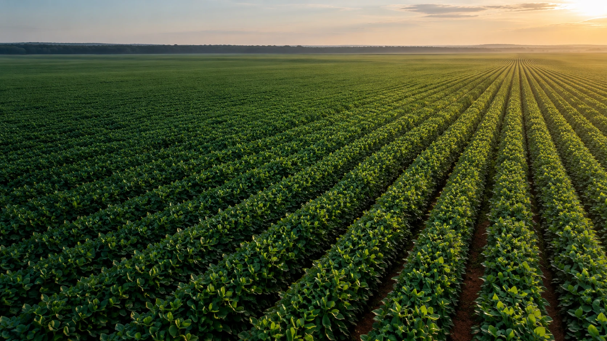
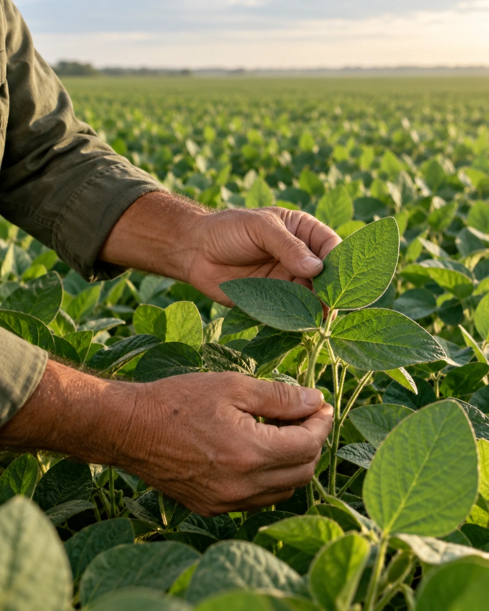

O futuro se
planta agora.
Sementes de alto vigor. Tecnologia que faz a diferença. Uma parceria que cresce com você, safra após safra.
Culturas.
Infinitas possibilidades.
Centros de distribuição.
Mais perto do seu campo.
Profissionais no campo.
Parceria de verdade.
Grandes resultados.
Começos bem escolhidos.
Cada cultura, um novo começo. Encontre a cultura para o seu próximo ciclo. O nosso cuidado começa antes do plantio.
Negócios e soluções.
Do início ao próximo ciclo.
Da análise à entrega, do plantio ao desenvolvimento. Soluções que trabalham juntas para o seu campo ir além.
 CUIDADO EM CADA ETAPA.
CUIDADO EM CADA ETAPA.O outro, para o seu futuro.
Petrovina Prime
Tecnologia e cuidado para levar o potencial da semente até a sua lavoura.
Conheça a soluçãoCarga térmica
O cuidado com a qualidade continua no caminho, com transporte refrigerado de sementes.
Conheça a soluçãoFreereplant
Conheça o programa de apoio ao replantio e as condições para a sua safra.
Conheça o programaSeed Prime
Análise de sementes para trazer mais informação às decisões que você toma no campo.
Conheça o laboratórioMais apoio para o seu campo.
O campo produz.
A informação conecta.
Acompanhe o mercado de commodities e explore informações para o seu próximo negócio.
Explore commoditiesPerto da semente.
Perto de quem produz.
Qualidade se constrói de perto. No cuidado com a semente e na parceria com cada produtor.
Da produção ao armazenamento e ao transporte, acompanhamos cada etapa para levar ao campo sementes com todo o seu potencial.
Conheça nosso time
O campo não para.
A informação também não.
Todos os conteúdos Pronto para o seu
próximo resultado?
O próximo ciclo começa com uma escolha. Conte com a Petrovina para dar esse passo.
Faça seu orçamento online Ou converse com nosso time